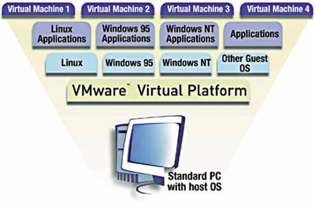

16.1. Введение
Как бы ни ругались сторонники Linux по поводу продуктов и
поведения фирмы Microsoft, однако приходиться признать тот факт, что
существенная (если не подавляющая) часть пользователей компьютеров работает на
ОС этой фирмы. Так что волей или неволей, но надо находить способы обмена
информацией с компьютерами, работающими под управлением ОС фирмы Microsoft.
Эта проблема имеет несколько аспектов:
- ОС Linux должна уметь
просматривать (открывать) файлы, хранящиеся на устройствах накопления (дисках и
т.д.), на которых информация записана в форматах файловых систем FAT и NTFS;
- надо уметь обрабатывать (читать и создавать) файлы в форматах популярных
программ (MS Word, Excel, Access и т.д.);
Первая из этих проблем решается тем, что Linux уже сейчас может свободно
монтировать диски (или разделы) в формате FAT (и 16-ти и 32-разрядных), а
начиная с версии ядра 2.0.х может читать файлы с NTFS-разделов. Думаю, что
запись в NTFS-разделы станет возможна в самом ближайшем будущем. О том, как
получить доступ из Линукс к разделам диска, отведенным для MS Windows, мы
поговорим в следующем подразделе (16.2).
Для решения второй проблемы предложены несколько подходов.
Простейший
вариант заключается в создании небольших программ для просмотра файлов
популярных форматов. Так, например, программа wv, которую можно найти на
сервере www.linuxberg.org, позволяет просматривать файлы MS Word. Подход,
реализованный в этой программе, состоит в конвертации файлов формата MS Word в
файлы формата html, которые можно просматривать под Линуксом с помощью различных
программ (например, в файловом менеджере kfm). Очевидно, что такой подход
недостаточен из-за его однонаправленности - создать файл в формате Word мы не
можем. Тем не менее этот подход широко используется и уже был рассмотрен в разделе, посвященном
редактированию текстовых файлов.
Второй подход - создание эмуляторов, позволяющих под Linux-ом запускать
программы фирмы Microsoft. Именно такие эмуляторы мы и рассмотрим в настоящем
разделе.
Существует еще и третий подход - создание виртуальных машин, программно
эмулирующих работу компьютера под управлением другой ОС. Этот подход для ОС
Linux начал разрабатываться очень недавно фирмой VMWare Inc. Он будет рассмотрен
в отдельном подразделе, а мы пока
что вернемся к вопросу о том, как получить доступ к дискам и разделам с
файловыми системами FAT и NTFS.
16.2. Доступ к разделам MS Windows из Linux
Разделы, сформатированные в
файловой системе FAT16 доступны из Линукс практически без всяких дополнительных
усилий. Для получения доступа (причем полного, как по чтению, так и по записи) к
файлам на этих разделах достаточно такой раздел смонтировать в общую файловую
систему Линукс. Если Вы забыли, как это делается, загляните в
раздел 11.3.
Несколько сложнее обстоит дело с разделами на магнитных носителях,
сформатированными в FAT32 или NTFS. По крайней мере я долго не мог получить из
Линукс доступ к имевшемуся у меня разделу в формате NTFS. Раздела в формате
FAT32 у меня не было, так что и опыта соответствующего нет. Поэтому я расскажу о
том, как добраться до NTFS-раздела (думаю, что с разделами FAT32 дело обстоит не
сложнее).
Для доступа к файлам на NTFS-разделах можно пойти двумя путями. Во-первых,
начиная с версии 2.0.х ядро Линукса поддерживает файловую систему NTFS. Однако
поддержка эта реализована, так сказать, потенциально, поскольку в поставляемый с
дистрибутивом вариант ядра она не включена. Чтобы воспользоваться этой
возможностью, надо переконфигурировать ядро. Для начинающего пользователя эта
задача может оказаться непосильной; признаюсь, что с двух попыток мне это не
удалось.
Проще оказалось найти в Интернет драйвер файловой системы NTFS, разработанный
Мартином фон Лоэвисом (Martin von Loewis, l[email protected]). Я
нашел этот драйвер на сервере http://www.informatik.hu-berlin.de/~loewis/ntfs/.
(Кстати, для файловой системы FAT32 аналогичный драйвер можно поискать по
адресу http://bmrc.berkeley.edu/people/chaffee/fat32.html.)
Следуя пошаговым инструкциям, приведенным в прилагаемых файлах README и
INSTALL, я без проблем установил драйвер NTFS (залогировавшись как root),
и после выполнения соответствующей команды монтирования увидел каталоги и файлы
из NTFS-раздела.
К сожалению, пока что этот драйвер имеет несколько недостатков. Во-первых,
увидеть NTFS-раздел может только суперпользователь root. Если Вы логируетесь как
простой пользователь (в другой консоли, например), войти в соответствующий
каталог Вам не удастся.
Во-вторых, драйвер работает только на чтение.
Впрочем, авторы обещают в следующих версиях обеспечить и возможность записи в
этот раздел. Подождем!
В заключение этого подраздела мне хотелось бы заметить, что из MS Windows NT
тоже можно получить доступ по чтению в раздел, отформатированный в Линукс, то
есть к файловой системе типа ext2. Для этого тоже достаточно запустить
под Windows NT соответствующий драйвер, который разработан Джоном Ньюбигином
(John Newbigin) из Австралии и называется explore2fs.exe, Найти этот
драйвер можно на сайте автора uranus.it.swin.edu.au/~jn/.
Этот же драйвер обеспечивает доступ к ext2-разделу из Windows 95 OSR1, OSR2.1 и
Windows 98, однако при условии, что установлен дополнительный модуль DLL
diskio.dll, обеспечивающий 16-разрядный доступ к физическим секторам диска.
Таким образом, проблема обмена файлами между двумя ОС практически решена,
хотя с некоторыми неудобствами пока, к сожалению, приходится мириться. Перейдем
к вопросу о том, как запустить под Линуксом программу, разработанную для MS
Windows.
16.3. Как работают эмуляторы
Существует несколько независимых разработок
эмуляторов - программ, которые позволяют запускать Windows-приложения под ОС
Linux. Мы рассмотрим одну из них - программу Wine. Другая известная программа
эмуляции, Wabi, по-моему, поддерживает только DOS и Windows 3.1 и ее разработка
приостановилась, в то время как Wine продолжает развиваться и обеспечивает
поддержку программ, созданных для Windows 95 и Windows NT.
Прежде чем начать рассмотрение Wine, стоит сказать несколько слов о принципах
работы эмуляторов вообще.
Эмуляторы - это "промежуточное" ПО. Они располагаются между приложениями и
операционной системой. Эмулятор воспринимает запросы приложения Microsoft
Windows и формирует эквивалентный запрос к ОС Linux, чтобы достичь желаемого
результата.
Например, если приложение использует вызов Windows API для открытия
программы, эмулятор преобразует этот запрос в эквивалентный запрос к X Window.
Запрос на печать или любой другой запрос к некоторому устройству преобразуется в
соответствующую команду UNIX или передается на устройство. Многие запросы
приложений передаются прямо процессору (преобразуются в инструкции процессора).
16.4. Эмулятор Wine
Wine (WINdows Emulator) - это программа, которая
позволяет запускать под Unix-ом программы, созданные для Microsoft Windows
(включая программы для DOS, Windows 3.x и Win32). Wine состоит из загрузчика,
который загружает и выполняет программы Microsoft Windows, и библиотеки, которая
реализует вызовы Windows API, используя их Unix или X11 эквиваленты.
16.4.1. Требования
Для компиляции и запуска Wine Вы должны иметь одну
из следующих систем:
Linux версии 2.0.36 или более позднюю
FreeBSD-current, FreeBSD 3.0 или выше
Solaris x86 2.5 или выше
Хотя Wine будет работать на Linux версий 2.0.x, некоторые функции
(specifically LDT sharing), необходимые для полноценной поддержки нитей в Win32,
не обеспечиваются ядрами версий ниже 2.2. Если у Вас будут постоянно возникать
сбои, Вам, может быть, стоит перейти на ядро версии 2.2.
Если Вы будете компилировать Wine из исходников, в Вашей системе должна быть
установлена библиотека libXpm. Ее можно найти на сайте ftp.x.org и его зеркалах
в каталоге /contrib/libraries. Если Вы используете RedHat, libXpm включена в
дистрибутив в виде пакетов xpm и xpm-devel. В дистрибутив Debian libXpm входит
как xpm4.7, xpm4g, и xpm4g-dev 3.4j. SuSE называет эти пакеты xpm и xpm-devel.
Кроме того, Вам потребуются gcc >= 2.7.2, flex версии 2.5 или более
поздней и yacc. Вместо yacc можно использовать Bison. Если Вы работаете с
RedHat, установите пакеты flex и bison.
16.4.2. Установка и настройка
Хотя Wine можно скомпилировать из
исходников, но все же для установки гораздо проще воспользоваться rpm-пакетом,
который поставит готовые исполняемые модули. Сразу после установки в этом случае
выдается сообщение том, что до начала использования программы необходимо
исправить конфигурационный файл в соответствии со структурой Вашей системы.
Конфигурационный файл программы Wine называется wine.conf. По умолчанию он
расположен к каталоге /etc/wine. Если Вы создадите в своем домашнем каталоге
файл .winerc, то значения конфигурационных параметров для Wine будут браться из
этого файла, а не из wine.conf.
В файле wine.ini содержится пример задания конфигурационных параметров,
который можно откорректировать в соответствии со структурой Вашей системы и
заменить им один из упомянутых выше файлов.
Формат конфигурационного файла подробно объясняется на man-странице
wine.conf. Файл wine.conf организован в виде секций. Каждая секция начинается с
имени, заключенного в квадратные скобки. Могут иметься следующие секции
Название секции | Необходима | Назначение
----------------------------------------------------------------
[Drive X] | да | Задает диски, распознаваемые программой wine
[wine] | да | Определяет основные системные каталоги для wine
[DllDefaults] | рекоменд. | Установки по умолчанию для загрузки DLL
[DllPairs] | рекоменд. | Sanity checkers for DLL's
[DllOverrides] | рекоменд. | Overides defaults for DLL loading
[options] | нет | никто не знает
[fonts] | да | Font appearance and recognition
[serialports] | нет | COM ports seen by wine
[parallelports] | нет | LPT ports seen by wine
[spooler] | нет | Print spooling
[ports] | нет | Direct port access
[spy] | нет | What to do with certain debug messages
[Registry] | нет | Specifies locations of windows registry files
[tweak.layout] | рекоменд. | Appearance of wine
[programs] | нет | Автоматически запускаемые программы
[Console] | нет | Console settings
Рассмотрим подробнее структуру основных секций.
Секция [Drive X]
Каждая из секций этого типа (их может быть несколько) описывает для wine один
из дисков, как это понимается в MS Windows. Это описание состоит из 6 строк
(некоторые не обязательны):
[Drive X]
Со строки такого вида начинается описание диска, который под Windows
обозначался бы как диск X:.
Path=/dir/to/path
Эта строка указывает Wine, какой каталог в общем дереве файловой структуры
Linux считать корневым каталогом диска X:. Обратите внимание на то, что эта
строка не имеет конечного слэша!
Type=floppy | hd | cdrom | network
(вертикальная черта означает, что
выбирается одна из возможных опций)
Эта строка устанавливает тип диска (дополнительных обьяснений не требуется).
Label=string
Определяет метку диска (длиной до 11 символов). Обычно необходима только для
программ, которые ищут данные на специальных CD-ROM дисках, особенно для игр под
Windows 95. Для последних версий wine необходимость задания этой строки отпала,
метка теперь считывается с диска.
Serial=number
Сообщает Wine серийный номер диска (до 8 символов или шестнадцетиричных
знаков). Эта строка необходима только для программ, которые используют серийный
номер для защиты от копирования. Если у Вас нет таких программ, не используйте и
эту строку.
Filesystem=msdos | win95 | unix
Определяет некоторые особенности обращения к файлам на данном диске.
- msdos -> файловая система, не различающая регистр символов. Подобно DOS
и Windows 3.x. использует ограничение 8.3 на длину имени файла - более длинные
имена обрезаются.
(ЗАМЕЧАНИЕ: не стоит выбирать это значение данной опции,
если Вы планируете запускать приложения, которые используют длинные имена
файлов.)
- win95 -> регистр символов не различается. Похожа на Windows 9x/NT 4.
Это файловая система с которой Вы, вероятно, предпочтете работать.
- unix -> регистр символов различается. Но выбирать это значение вряд ли
стоит, потому что приложения для Windows не могут различать регистр символов.
Можете поэкспериментировать, однако наилучшим выбором является все же win95.
Device=/dev/xx
Эту строку нужно использовать ТОЛЬКО для гибких дисков и cdrom.
ЗАМЕЧАНИЕ: Эта опция не очень важна, почти все приложения будут нормально
работать, даже если ее не задать.
Приведем несколько примеров определений дисков для Wine. Первый пример
определяет диск C:
[Drive C]
Path=/mnt/dos
Type=hd
Label=Hard Drive
Filesystem=win95
Второй пример задает диск CD-ROM:
[Drive E]
Path=/mnt/cdrom
Type=cdrom
Label=Total Annihilation
Filesystem=win95
Device=/dev/hdc
А для гибкого диска описание может иметь следующий вид:
[Drive A]
Type=floppy
Path=/mnt/floppy
Label=Floppy Drive
Serial=87654321
Filesystem=win95
Device=/dev/fd0
Секция [wine]
Эта секция содержит информацию об основных системных каталогах, которые
использует wine.
Windows=c:\windows
System=c:\windows\system
Эти строки указывают, где расположены системные файлы Windows.
Обратите
внимание на отсутствие слэшей (НЕ C:\windows\)!
Temp=c:\temp
Это каталог для записи временно создаваемых файлов. ВЫ ДОЛЖНЫ ИМЕТЬ ПРАВО
ЗАПИСИ В ЭТОТ КАТАЛОГ! Это очень существенноое условие, поскольку если Wine
запущен не от имени root-а, то будет возникать ошибка.
Path=c:\windows;c:\windows\system;c:\utils
Этой строкой задается перечень каталогов, из которых программы будут
запускаться без указания полного имени к исполняемому файлу. Не забудьте
включить в этот перечень системные каталоги c:\windows;c:\windows\system.
SymbolTableFile=wine.sym
Задает файл с таблицей символов для отладчика wine (wine debugger).
printer=off | on
Разрешает или запрещает печать из-под wine. Эта возможность пока еще плохо
отлажена в wine, так что, может быть, пока лучше не включать эту строку в файл
wine.conf.
Секции DLL Прежде чем перейти к описанию секций, регулирующих работу с
DLL, надо дать два небольших пояснения.
- 1. ПАРЫ WINDOWS DLL
Большинство DLL-модулей для Windows существуют в двух вариантах:
16-разрядном (Windows 3.x) и 32-разрядном (Windows 9x/NT). Комбинация из двух
версий DLL (win16 и win32) называется "DLL-парой" ("DLL pair"). Вот список
важнейших DLL-пар:
Win16 | Win32 | Native*
-----------------------------
KERNEL | KERNEL32 | No!
USER | USER32 | No!
SHELL | SHELL32 | Yes
GDI | GDI32 | No!
COMMDLG | COMDLG32 | Yes
VER | VERSION | Yes
*-В этом столбце показывается, можно ли использовать исходные (от Windows)
DLL-пары с wine?(Смотри следующий подраздел)
- 2. РАЗЛИЧНЫЕ ФОРМЫ DLL
Существует несколько различных форм (или типов) DLL, которые могут
загружаться через wine:
- native -> Это DLL, которые поставляются с MS Windows. Большинство
таких DLL могут быть загружены через wine, причем работают иногда лучше, чем
их не-Microsoft-овские эквиваленты (правда, иногда могут совсем не
работать).
- elfdll -> Windows DLL, инкапсулированные в ELF-файлы. Пока в стадии
экспериментов (еще не работают).
- so -> ELF-библиотеки. Еще не работают.
- builtin -> Наиболее общая форма загрузки DLL. Эта форма используется
в том случае, если DLL без ошибок работает в форме native (KERNEL,
например), у Вас нет native DLL, или Вы хотите избавиться от всего
Microsoft-овского.
Секция [DllDefaults]
Установки в этой секции определяют умолчания, по которым wine производит
загрузку DLL.
EXTRA_LD_LIBRARY_PATH=/dirs
Указанный в этой строке путь добавляется к обычным путям поиска для некоторых
типов DLL (elfdll и .so).
DefaultLoadOrder = native, elfdll, so, builtin
Это параметр задает список разделенных запятыми типов DLL, определяющий
порядок, в котором производится попытки загрузки DLL. Приведенный в данном
примере порядок, вероятно, самый оптимальный.
Секция [DllPairs]
Эта секция не обязательна, но ее очень рекомендуется иметь. Если Вы будете
пытаться загрузить SHELL32 типа native, а SHELL типа builtin, у Вас могут
возникнуть большие проблемы, потому что типы native и builtin/so/elfdll одни и
те же операции выполняют разными способами. Поэтому использовать разные типы
парных DLL - это *очень, очень* плохая идея. Если Вы зададите DLL-пары в этой
секции, wine будет выдавать сообщение об ошибке в тех случаях, когда Вы
попытаетесь использовать разные формы DLL из одной пары. Эта секция должна иметь
следующий вид:
[DllPairs]
kernel = kernel32
gdi = gdi32
user = user32
commdlg = comdlg32
commctrl= comctl32
ver = version
shell = shell32
lzexpand= lz32
winsock = wsock32
Секция [DllOverrides]
Все строки этой секции имеют один и тот же формат:
<DLL>{,<DLL>,<DLL>...} = <FORM>{,<FORM>,<FORM>...}
Например, чтобы загрузить пару KERNEL типа builtin (регистр здесь не имеет
значения):
kernel,kernel32 = builtin
Для того, чтобы вначале попытаться загрузить пару COMMDLG типа native, а в
случае неудачи попробовать тип builtin:
commdlg,comdlg32 = native,builtin
Для того, чтобы загрузить native COMCTL32:
comctl32 = native
Эту секцию стоит сохранить в том виде, как она прописана в файле wine.cong,
который создается при установке пакета wine:
[DllOverrides]
kernel32, gdi32, user32 = builtin
kernel, gdi, user = builtin
toolhelp = builtin
comdlg32, commdlg = elfdll, builtin, native
version, ver = elfdll, builtin, native
shell32, shell = builtin, native
lz32, lzexpand = builtin, native
commctrl, comctl32 = builtin, native
wsock32, winsock = builtin
advapi32, crtdll, ntdll = builtin, native
mpr, winspool = builtin, native
ddraw, dinput, dsound = builtin, native
winmm, w32skrnl, msvfw32= builtin
wnaspi32, wow32 = builtin
system, display, wprocs = builtin
wineps = builtin
Секция [options]
Кажется, никто не знает, для чего нужна эта секции... Не трогайте, оставьте,
как есть!
Секция [fonts]
Эта секция устанавливает, как wine обрабатывает фонты.
Resolution = 96
Поскольку система X работает с фонтами не так, как Windows, wine использует
специальный механизм работы с ними. Число, указанное в этой строке, используется
при преобразовании шрифтв. Допустимые значения для него 60-120. Значение 96
вполне приемлемо!
Default = -adobe-times-
Фонт, который wine использует по-умолчанию. Попробуйте поменять, если есть
такое желание.
Строки, начинающиеся с "Alias", необязательны.
Секции [serialports], [parallelports], [spooler], и [ports]
Секция [serialports] сообщает wine, какой последовательный порт программе
разрешено использовать.
ComX=/dev/cuaY
Замените здесь X на номер COM-порта в Windows (1-8), а Y - на номер того-же
порта в X (обычно номер порта в Windows минус 1). Например, так:
Com1=/dev/cua0
Нет необходимости определять таким образом все COM-порты (установка
опциональна). Но Вы можете задать в секции любое число строк такого вида для
всех COM-портов, которые Вам необходимы.
Секция [parallelports] состоит из аналогичных строк:
LptX=/dev/lpY
(значение Y обычно равно значению X в windows минус 1, как и для COM-портов).
Например,
Lpt1=/dev/lp0
Секция [spooler] используется только в том случае, если Вы пытаетесь печатать
через wine. Однако в документации говорится, что печать еще плохо работает в
wine, поэтому лучше всего перенаправить печать в файл, оставив в этой секции
всего одну строку вида:
LPT1:=out.ps
В этом примере LPT1 назначается в файл "out.ps". В следующем примере печать
через LPT1 перенаправляется на команду "lpr" (обратите внимание на |):
LPT1:=|lpr
Секция [ports] необходима только для работы со сканерами и еще некоторыми
устройствами. ЕСЛИ ВАМ ЭТО НЕ НУЖНО, НЕ ИСПОЛЬЗУЙТЕ ЭТУ СЕКЦИЮ!
Секции [spy], [Registry], [tweak.layout] и [programs]
[spy] используется для того, чтобы включить или отключить отладочные
сообщения и для перенаправления их в файл. [Registry] используется для того,
чтобы указать wine, где расположены файлы реестра windows. О структуре этих
секций почитайте в документации.
Секция [tweak.layout] определяет как будет выглядеть окно wine. Здесь
задается только один параметр:
WineLook=win31|win95|win98
Секция [programs] используется для того, чтобы задать имена программ,
запускаемых в особых случаях.
Default=/program/to/execute.exe
Определяет программу, которая будет автоматически запускаться при запуске
wine (если в командной строке не указано имя другой запускаемой программы).
Startup=/program/to/execute.exe
Определяет программу, которая будет запускаться при запуске wine (независимо
от того, задано ли имя другой программы в командной строке).
16.4.3. Использование программы Wine
Для запуска с помощью wine
программы для Windows нужно задать в командной строке следующую команду:
wine [options] program_name.
Запуская программу посредством Wine, Вы можете указать либо полный путь к
исполняемому файлу, либо только его имя. Например, запустить игру Solitaire,
можно одним из следующих способов:
wine sol (для определения местоположения файла
используются пути поиска)
wine sol.exe
wine c:\\windows\\sol.exe (используются имена файлов в стиле DOS)
wine /usr/windows/sol.exe (используются имена файлов в стиле Unix)
Замечание: the path of the file will also be added to the path when a full
name is supplied on the commandline.
Я опробовал все 3 указанных варианта запуска игры Solitaire и все они
одинаково сработали. Однако загрузка программ этим способом происходит ужасно
медленно. И еще, использовать Wine может только суперпользователь root. У
обычного пользователя не хватает прав для того, чтобы осуществлять запись в
файловую систему, указанную как диск C:.
Разработка Wine пока не завершена, так что некоторые Windows-программы могут
не работать через Wine. К примеру, у меня не получилось запустить через Wine
привычный файловый менеджер для Windows FAR. В ответ на попытку запуска я
получил сообщение "No handler for Win32 routine KERNEL32.571: ReadConsoleOutputA
(called from 0x42a816)".
Несколько более непонятный результат получился в результате попытки запустить
программу pkunzip для извлечения файла из архива. pkunzip-то запустился, но как
будто не увидел аргумента - имени архива. Просто выдал окно справки, как это
проиходит в Windows (и DOS) при запуске программы без параметров.
Зато программа WinZip запустилась и мне удалось разархивировать с ее
помощью zip-файл. Так что в некоторых случаях wine вполне работоспособна.
16.4.4. Что делать, если что-то не работает?
Поскольку Wine еще находится в стадии разработки, то всегда есть шанс, что
запустить Windows-приложение через wine не удастся. В таких случаях можно
попытаться найти дополнительную информацию по конкретному вопросу в группе
новостей comp.emulators.ms-windows.wine. Но, конечно, первым делом стоит
перечитать документацию в каталоге /usr/doc/wine-xxxxxxxx/documentation
(здесь xxxxxxxx - номер версии). В первую очередь надо пересмотреть файлы
README
documentation/bugreports
В Интернет можно найти FAQ и HOWTO по программе wine, если заглянуть по
следующим адресам:
FAQ: http://www.winehq.com/faq.html.
HOWTO: http://www.westfalen.de/witch/wine-HOWTO.txt .
Большое количество документации можно найти на сайте разработчиков
программы http://www.winehq.com/. Кстати,
поскольку разработка ведется достаточно интенсивно, то на этом сайте Вы, может
быть найдете уже доработанную версию программы, в которой устранен тот
недостаток, с которым Вы столкнулись.
16.5. Виртуальные машины от VMware
Я впервые обратил серьезное внимание
на Linux тогда, когда натолкнулся на сервер компании VMWARE Inc., которая выпустила (тогда еще
только для LINUX, сейчас есть и для NT) ПО для создания системы виртуальных
машин (СВМ).
Суть ПО СВМ в том, что под управлением основной ОС на компьютере создаются
один или несколько виртуальных компьютеров (виртуальных машин - ВМ), каждый из
которых имеет все компоненты реального компьютера:
- центральный процессор;
- оперативную память;
- жесткий диск;
и т.д.
Естественно, что все это получается путем разделения ресурсов реального
компьютера. Точно также через виртуальную машину предоставляется доступ к
принтеру, сетевой плате, CD-ROM и другим ресурсам. В каждой ВМ может быть
запущена своя ОС. Таким образом на одном компьютере могут ОДНОВРЕМЕННО работать несколько разных ОС и переход с
одной ОС к другой может производиться путем перехода из одного окна в другое,
без перезапуска компьютера.
СВМ представляет собой слой ПО, расположенный между основной ОС и ОС ВМ, в
которой в свою очередь запускаются прикладные программы:

Естественно, что для работы такой системы надо иметь достаточно
мощный компьютер, в частности оперативной памяти должно быть не менее 96 Мбайт.
Но зато решается самым естественным образом проблема взаимодействия с ОС MS
Windows: для обработки файлов, например, MS WORD достаточно просто перейти в
окно с ОС Windows95 и запустить там WORD. Не нужны всякие DOSEMU, WABI, WINE и
прочие разработки, которые хронически отстают от MS (что естественно). А решать
проблему взаимодействия с MS все равно надо, поскольку очень уж она
распространена. Часто возникает необходимость в обмене текстовыми файлами с
людьми, которые работают в MS Windows. Кроме того, для MS Windows разработана
масса очень удобных приложений, которые пока, к сожалению, не перенесены в среду
Linux. Все эти проблемы решаются за счет использования виртуальных машин от
VMWARE.
Учитывая то, что ПО виртуальных машин позволяет кардинально решить массу
проблем, а также то, что детальное рассмотрение этого ПО требует значительного
обьема текста, стоит посвятить этому вопросу отдельный раздел. Но вначале
рассмотрим более простой случай перехода от одной ОС к другой - многовариантную
загрузку.